掌機 - Gaviar (小志掌機) - 關於按鍵、類比搖桿
參考資訊：
https://nerfgamer.com/what-is-controller-deadzone/
https://makeabilitylab.github.io/physcomp/arduino/debouncing.html
https://microchipdeveloper.com/xpress:code-free-switch-debounce-using-tmr2-with-hlt
https://forum.digikey.com/t/switch-bounce-in-mechanical-switch-and-debounce-circuit/14231
一般掌機使用的按鍵，大部分都是使用十字鍵、4個功能鍵、SELECT、START、L、R等按鍵，這也是早期Nintendo掌機的標準配備，而用來耦合按鍵和PCB的橋樑則是以導電膠、鍋仔片為大宗，這些看似簡單的東西，其實背後隱藏的許多設計的小細節，司徒嘗試來解說一下過程，下圖是NDSL掌機的PCB圖片

從上圖可以發現一個設計小細節，十字鍵的PCB缺口，它的長相跟4個功能鍵並不一致，這是因為十字鍵是連通按鍵(上下左右連在一起)，而4個功能鍵則是各自分開的按鍵，因此，當十字鍵的其中一個方向被按下時，其餘方向也會受影響，因此PCB設計必須做些保護措施，避免鬼鍵的問題發生
司徒使用如下圖片說明一下鬼鍵發生的過程，當十字鍵的下方向被按下時，左、右方向的按鍵也會稍微往下傾斜，所以最壞的情況下，系統將會收到下、左、右三個按鍵的訊息
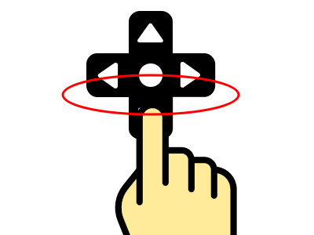
十字鍵正常位置
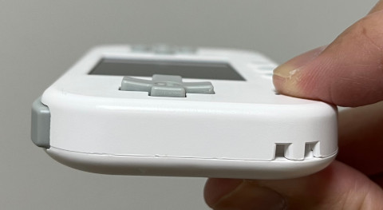
下方鍵被按下時，左、右方向的按鍵也往下傾斜，說明導電膠會有誤觸到PCB的狀況發生
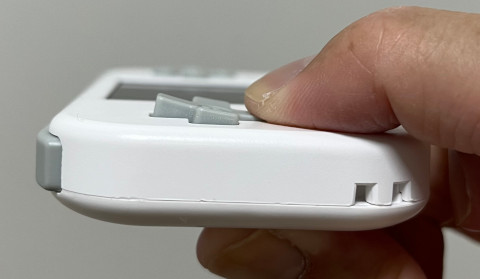
因此，為了避免十字鍵的鬼鍵問題，十字鍵的PCB缺口必須依照方向做適當排列，這樣就可以避免誤觸的問題，如下圖所示，十字鍵的左右按鍵會設計成上下導通，而十字鍵的上下按鍵則會設計成左右導通
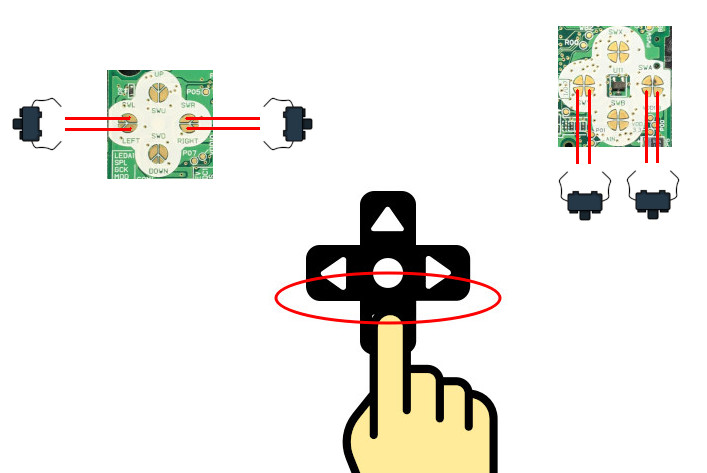
至於鍋仔片，由於導通點是位於中央，因此，十字鍵的鬼鍵問題得以改善
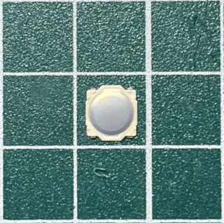
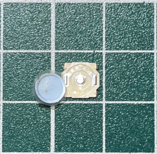
下圖是小志掌機使用的按鍵，由於按壓力道需要比較用力，因此，這種按鍵比較少用於掌機，不過，如果使用此類的按鍵，則需要注意彈跳的問題
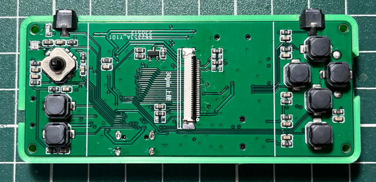
一般按鍵使用彈片做導通，如下所示
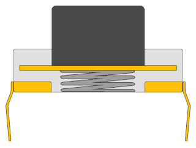
因此，按下或者放開時，會有一段不穩定的彈跳時間，如下圖所示，這就是一般按鍵的彈跳問題
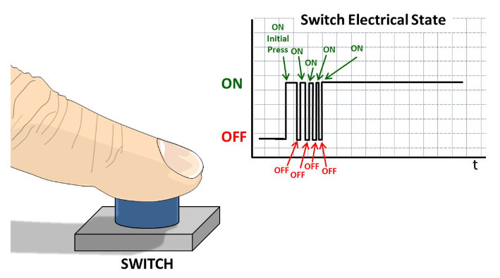
針對軟體的解法，可以延遲一段時間後，一般是10ms，接著再判斷按鍵是否確實被按下
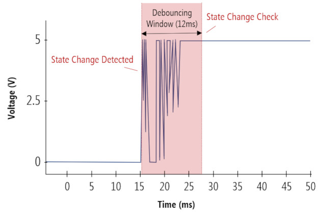
針對硬體的解法，最常見到的作法就是RC濾波，在按鍵旁邊加上電容，基於10ms計算，最常使用的是：10K電阻+1uF電容、47K電阻+220nF電容，透過電容的充、放電效應，來修飾爬升曲線
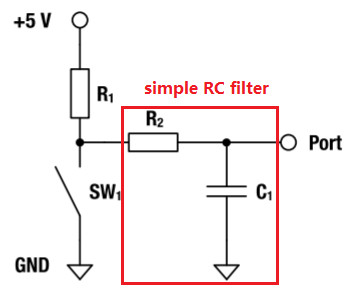
市面上，有些晶片已經有內建Debounce功能，這樣就可以很方便解決按鍵彈跳問題
當然，有些掌機會使用類比搖桿當作十字鍵使用，如：Caanoo掌機(類比電阻)、Neo Geo Pocket掌機(4顆按鍵)，如果是使用4顆按鍵則可以使用如上的彈跳解法，但是，如果是使用類比電阻，則需要加入Dead Zone判斷，避免漂移問題
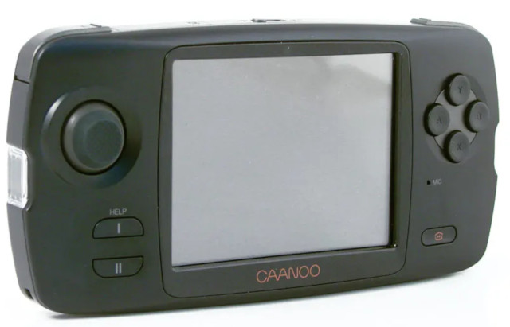
Dead Zone一般用於無效區域設定，當類比搖桿的移動是處於這些區域時，則不會發送任何移動訊號，而類比搖桿最常遇到就是靜止不動時，搖桿自動漂移(鬼鍵問題)，因此，如果使用類比搖桿當作十字鍵使用時，記得加入Dead Zone判斷，避免漂移問題發生
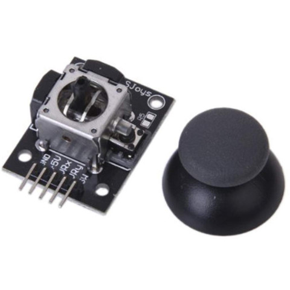
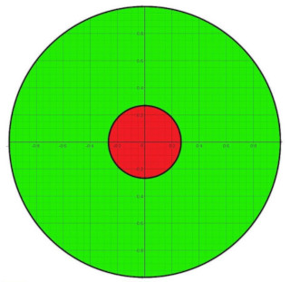